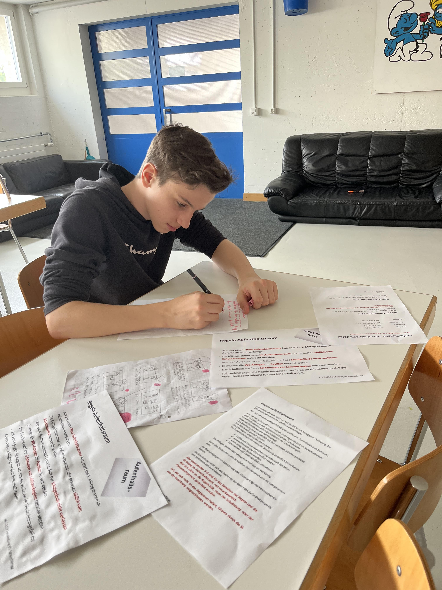

Elia Brunner Hey, ich bin Elia und ich bin 14 Jahre alt. Ich bin in der Schweiz geboren und meine Eltern stammen aus der Schweiz. Als Kind war ich immer neugierig und fand alles interessant, was mit Technologie zu tun hat. Ich habe schon früh begonnen, mich für Computer und das Internet zu begeistern. Ich besuche die Sproochbrugg in Zuckenriet und bin in der 8. Klasse. Ich bin sehr gut in Informatik und finde es faszinierend, wie Computer funktionieren und wie man sie programmieren kann. Ich habe bisher noch keine eigenen Spiele oder Anwendungen entwickelt, aber ich lerne immer mehr über verschiedene Programmiersprachen und möchte meine Fähigkeiten in Zukunft nutzen, um praktische Anwendungen und Lösungen zu entwickeln. Ich hoffe, dass ich später als IT-Spezialist arbeiten kann. Es gibt so viele interessante Bereiche in der IT, in denen man arbeiten kann, wie z.B. Web-Entwicklung, Datenbank-Management oder IT-Sicherheit. Ich möchte mich in mehreren Bereichen weiterbilden, um herauszufinden, welcher Bereich am besten zu mir passt. Neben der IT verbringe ich gerne Zeit mit Freunden und Familie. Wir machen oft Spieleabende oder gehen ins Kino. Ich finde es auch cool, neue Leute kennenzulernen, die meine Leidenschaft für Technologie teilen.
